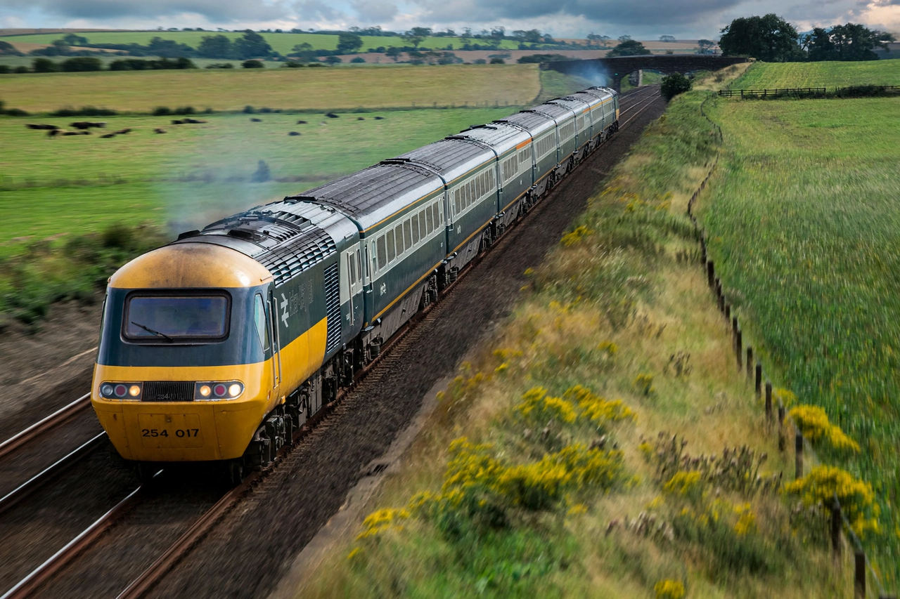

| InterCity 125 | |
|---|---|
 | |
| Type | High-speed diesel trainset (HST) |
| Builder | BREL, Crewe Works |
| Built | 1975–1982 (197 sets) |
| Power cars | Class 43, 2 × 2,250 hp Paxman Valenta (later MTU) |
| Top service speed | 125 mph (201 km/h) |
| Record | 148 mph (238 km/h), 1987 — world diesel record |
The InterCity 125 (originally Inter-City 125) or High Speed Train (HST) is a diesel-powered high-speed passenger train built by British Rail Engineering Limited between 1975 and 1982. A fixed formation consists of two Class 43 power cars, one at each end, with a rake of Mark 3 coaches between them. Each power car was fitted with a Paxman Valenta engine developing 2,250 horsepower (1,678 kW).
Developed at the Railway Technical Centre in Derby after the advanced gas-turbine APT project faltered, the HST entered service in October 1976 on the Western Region, cutting times between London, Bristol and South Wales. Eastern Region sets followed in 1978 on the East Coast Main Line, and Cross-Country and Midland Main Line services in the 1980s. Advertising proclaimed "the age of the train", and the HST is credited with reviving inter-city rail travel in Britain, transforming journey times on non-electrified routes.
In service the trains ran at up to 125 mph (201 km/h) — making Britain's the fastest diesel service in the world — and in 1987 a test train reached 148 mph (238 km/h), a world record for diesel traction that still stands. After privatisation the fleets passed to franchised operators; many power cars were re-engined with MTU engines in the 2000s. Although progressively replaced on the East Coast and Great Western main lines by Hitachi-built Class 800/801 trains from 2017, shortened "Castle" sets and ScotRail "Inter7City" sets continued in regional service into the 2020s, an operating life approaching five decades.